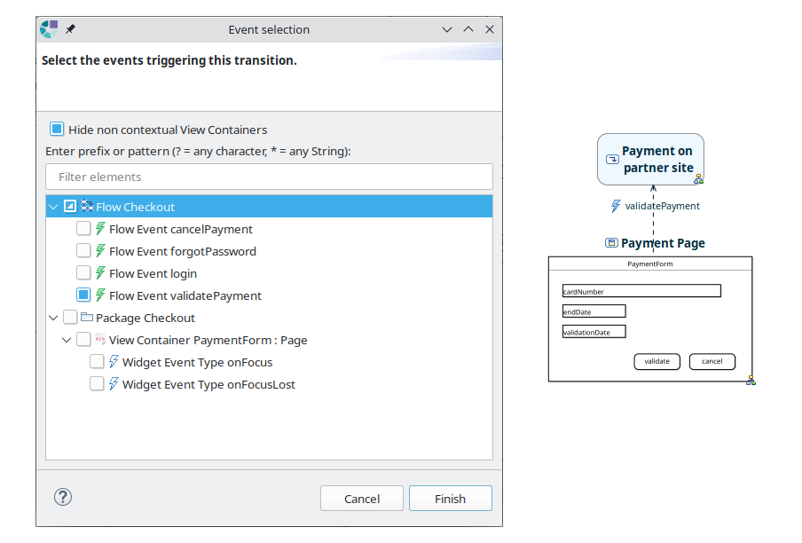
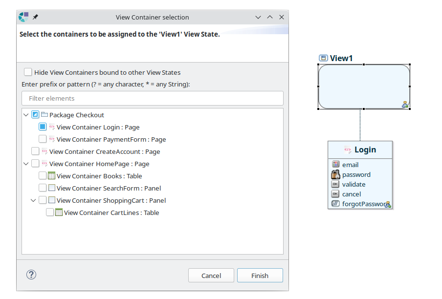

Copyright © 2008, 2023 Obeo - All rights reserved. This program and the accompanying materials are made available under the terms of the Eclipse Public License v1.0
Cinematic Designer est un outil de conception d'écrans d’application, permettant de décrire la structure d’une IHM (modélisation statique) et son comportement (modélisation dynamique).
Cinematic Designer apporte le point de vue Cinematic Views qui permet de :
Un assistant de création de modèles Cinematic est accessible via le menu :
File > New > Other ... > Cinematic Model (Catégorie IS Designer)
Ou bien le menu contextuel sur un projet :
New > Other ... > Cinematic Model (Catégorie IS Designer)
Ou encore le raccourci clavier
Ctrl+N
Cet assistant permet de définir
La dernière page de l’assistant permet de définir le toolkit à utiliser, et d’initialiser le modèle avec un diagramme de Mockup et un diagramme de flow :
Une fois l’assistant validé, le modèle est créé, ainsi que les représentations Package Diagram et UI Structure. Les représentations demandées en création sont ouvertes pour commencer à modéliser.
Lorsqu’un modèle cinematic est créé à l’aide de ce wizard, les points de vues Cinematic Views et Environment View sont activés.
Le point de vue Cinematic Views permet de visualiser et modifier un modèle cinematic via plusieurs types de diagrammes tel que décrit dans la section suivante. Le point de vue Environment View contient la définition des vues de propriétés avancées (EEF).
Un assistant de création de modèles Toolkits est accessible via le menu :
File > New > Other ... > Toolkits Model (Catégorie IS Designer)
Cet assistant permet de définir
Une fois l’assistant validé, le modèle est créé.
Si le fichier a été créé dans un modeling project, la seule étape nécessaire est l’activation du point de vue Cinematic Views. Pour ceci choisir Viewpoints Selection dans le menu contextuel du modeling project.
Si le projet est d’un autre type, il manque alors un fichier
representations file (fichier .aird). L’action de menu contextuel
Configure > Convert to Modeling Project permet de remédier à cette situation.
Pour ajouter le modèle Cinematic à un
representations file existant, choisir
Add Model dans le menu contextuel du
Project Dependencies, puis sélectionner la ressource du modèle Cinematic.
L’activation d’un point de vue se fait en choisissant Viewpoints Selection dans le menu contextuel du projet.
Le modeleur Cinematic apporte les représentations suivantes :
| Package Diagram | : diagramme permettant de modéliser les Packages, Flows et ViewContainers. |
| UI Structure | : représentation aborescente permettant de modélise la description statique de l’IHM (écrans, panels, widgets, ...). |
| View Container Mockup | : diagramme permettant de modéliser la structure et l’apparence des IHM. |
| Layout Diagram | : diagramme de consultation des composants et composites d’un Layout. |
| Flow Diagram | : diagramme permettant de modéliser la dynamique de l’IHM. |
Le Package Diagram est défini sur un objet de type Package, que nous appellerons par la suite package courant.
Sont affichés sur ce diagramme :
Pour un ViewContainer, sont affichés :
Les outils fournis par la palette sont :
| Création d’un Package. | |
| Création d’un Flow. | |
| Création d’un View Container. |
Les autres outils disponibles sont
La création d’un diagramme sur un
Package, un
Flow ou un
View Container se fait par le menu contextuel
New > #Nom du diagramme#.
La navigation vers un diagramme existant lié à un
Package, un
Flow ou un
View Container se fait par le menu contextuel
Open > #Nom du diagramme#.
Un double clic sur un
Package, un
Flow ou un
View Container déclenche la création d’un diagramme si il n’existe pas, ou bien son ouverture si il existe.
La représentation UI Structure fournit une vue d’ensemble complète de la structure des écrans de l’application modélisée, sous forme arborescente.
Les écrans sont décrit en termes de View Containers pouvant contenir :
Les View Containers peuvent être contenus dans des Package, permettant une structuration de ces différents éléments.
Cette représentation fournit en outre le moyen d’associer un toolkit au modèle Cinematic. Le toolkit est un modèle externe définissant les widgets utilisables pour la définition des écrans.
Les éléments affichés sont :
Les outils disponibles sont :
Cette représentation vient compléter la représentation UI Structure, apportant la modélisation de la disposition graphique des composants de l’IHM. Elle permet de créer et positionner les View Elements dans les View Containers.
La palette propose un outil de création de View Element ou View Container par widget disponible dans le toolkit utilisé. Son contenu dépend donc du toolkit actif sur le modèle Cinematic courant.
Voici les deux palettes dans le contexte des deux Toolkits fournis avec le studio IS-Designer :
| Toolkit Web | Toolkit Swt | |
Par défaut, le label des éléments présentés sur le View Container Mockup est déterminé de la manière suivante :
Le calque Example modifie le label des View Elements, permettant de visualiser l’IHM avec des données d’exemple. Le label est alors calculé tel que défini dans le toolkit, par l’expression AQL « example » du widget.
| Calque Example désactivé | Calque Example activé | |
Chaque repositionnement ou redimensionnement de View Element sur ce diagramme déclenche la mise à jour de la structure de Layout du View Container représenté sur le diagramme :
La structure de
Layout porte les positionnements graphiques des éléments du Mockup, organisés en structure de type « Grid Layout ». Un élément de Layout est défini par une position (coordonnées x, y), une taille (largeur, hauteur), une direction (horizontale ou verticale) et une liste de Layout fils.
L’algorithme de mise à jour de la structure de Layout procède à une analyse de l’espace en passes successivement verticales et horizontales. Dans l’exemple ci-dessus, l’espace est découpé verticalement en quatre compartiments, dont le dernier est découpé horizontalement en deux compartiments lors d’une deuxième passe.
Le choix de direction est déterminé par la direction dans laquelle l’espace se découpe le plus, avec en cas d'égalité un choix par défaut en découpage vertical.
Un élément de Layout peut être lié ou non à un View Element suivant qu’il représente le Layout d’un View Element ou bien le Layout d’un espace structurant (tel que le Layout qui englobe les deux boutons de l’exemple ci-dessus).
Le diagram Layout Diagram permet de visualiser cette structure de Layout (décrit dans le chapitre suivant).
Le double clic sur les éléments du diagramme de mockup permet de naviguer vers d’autres diagrammes en les créant à la volée si ils n’existent pas :
Lorsque des diagrammes sont créés pour un élément donné, ceux-ci sont navigables via le menu contextuel, dans le sous-menu Open.
Ce diagramme a pour simple but de visualiser une structure de Layout. Il n’a pas vocation à éditer cette structure, et sa palette est vide.
L’action Preview Layout du menu contextuel sur le fond du diagramme permet d’appliquer les données de positionnement contenues dans les objets Layout aux formes affichées sur le diagramme.
IS Designer > Preview Layout
Les Layouts liés à un View Element sont représentés avec une bordure en trait plein, ceux ayant pour rôle de structurer un compartiment de l’espace sont représentés avec une bordure en trait pointillé.
Les Layouts découpant l’espace verticalement sont présentés en rouge, ceux découpant l’espace horizontalement sont présentés en vert.
Le Flow Diagram est défini sur un élément de type Flow.
Sont affichés sur ce diagramme :
Les outils proposés par la palette sont :
| States | |
| Tracée entre deux états, permet de créer une transition. Si la transition est issue d’un View State, déclenche l’ouverture de l’assistant de sélection d'événements déclencheurs. | |
|
|
Crée un View State. Déclenche l’ouverture de l’assistant de sélection de View Container. |
| Crée un Action State. | |
| Crée un Async Event. | |
| Crée un Sub Flow State et affiche l’assistant de sélection de Flow existant. | |
| Crée un Sub Flow State et l’associe à un nouveau Flow créé dans la même action. | |
| Ports | |
| Crée un Initial State. | |
| Crée un Final State. | |
| Crée un Abort State. | |
| Crée un Decision Node. | |
| Events | |
|
|
Présent seulement si le calque Flow Events est activé. Crée un Flow Event dans le conteneur Flow Events. |
| View Containers | |
|
|
Crée un lien d’association entre un View State et un View Container déjà présent sur le diagramme. |
| Crée un lien d’association entre un View State et un View Container existant. Déclenche l’affichage d’un dialogue de sélection de View Container. | |
| Crée un lien d’association entre un View State et un View Container créé dans la même action. Déclenche l’affichage d’un dialogue de sélection du Widget dont le View Container représentera une instance. |
Autres outils :
| Double clic sur une Transition | : Ouvre le dialogue de sélection et de création d'événements déclencheurs |
| Double clic sur un View State | : Ouvre le dialogue de sélection de View Containers |
| Edition directe des libellés | : Sur les états, les conditions de garde, les Flow Events et les View Containers |
| Reconnexion | : Des transitions |
| Suppression | : Les éléments du diagramme |
Outils de navigation :
Menu contextuel :
L’apparence d’un ViewState peut prendre celle du diagramme de Mockup du View Container qui lui est associé par l’action
Apply Mockup Image du menu contextuel, permettant d’obtenir ce genre de rendu visuel :
L’action
Remove Mockup Image a pour effet de réinitialiser l’apparence du
View State à son apparence initiale.
Dialogue de séléction d'événements déclencheurs:

Elle présente l’ensemble des types d’événements supportés par les widgets utilisés dans le modèle Cinematic, ainsi que l’ensemble des événements logiques définis dans le Flow.
Note : L’existence ou non d’un événement en correspondance d’un type d’événement n’est pas pris en considération.
Les événements des widgets sont classés sous la hiérarchie des View Elements, les événements logiques sont regroupés sous un nœud virtuel « Flow events ».
La zone de filtre textuel permet de réduire le contenu de l’arbre de manière à n’afficher que les éléments dont le label se conforme au filtre. L’affichage d’un élément dont le label se conforme au filtre entraîne cependant l’affichage des éléments parents jusqu’à la racine de l’arbre ainsi que tous ses éléments fils. Le bouton « Clear » à droite de la zone de filtre permet d’effacer le filtre. Le métacaractère ‘*’ est supporté pour correspondre à une chaîne de caractères quelconque.
La case à cocher « Hide non contextual View Containers » permet de cacher les View Containers qui ne sont pas liés au View State source de la transition. A l’affichage du dialogue elle est cochée si au moins un View Container est lié au View State source.
L’arbre de sélection d’événement permet une sélection multiple. Le dialogue peut donc être validé avec une sélection vide, simple ou multiple.
A la validation du dialogue,
Lors de leur création, les événements sont nommés avec la concaténation : « <nom du widget> + ‹_› + <type d'événement> ».
Dialogue de séléction de ViewContainer:

Elle présente l’ensemble des View Containers du modèle Cinematic présentés sous la forme d’un arbre de contenance.
Les View Containers associés au View State concerné sont cochés.
La zone de filtre textuel permet de réduire le contenu de l’arbre de manière à n’afficher que les éléments dont le label se conforme au filtre. L’affichage d’un élément dont le label se conforme au filtre entraîne cependant l’affichage des éléments parents jusqu’à la racine de l’arbre ainsi que tous ses éléments fils. Le bouton « Clear » à droite de la zone de filtre permet d’effacer le filtre. Le métacaractère ‘*’ est supporté pour correspondre à une chaîne de caractères quelconque.
La case à cocher « Hide View Containers bound to other View States » permet de cacher les View Containers déjà liés à des View States. Elle est cochée à l’affichage du dialogue. Des containers déjà associés peuvent être affichés malgré le filtre de manière à afficher des containers fils qui eux ne sont pas
encore associés.
A la validation du dialogue, la liste des éléments associés au View State est mise à jour avec la sélection faite par l’utilisateur.
Un des objectifs du méta-modèle Cinematic est de permettre de créer facilement de nouveaux toolkits.
De manière succincte, la création d’un toolkit consiste en la création de widgets, et sous chaque widget la création des types d'événements qu’il peut déclencher.
Par exemple, un toolkit peut contenir un widget button avec un événement buttonPressed.
La création de toolkits est une tâche réalisée par l'équipe réalisant l’outillage de l'équipe d’analyse / conception / développement.
A ce titre, la définition de toolkits se fait par l'éditeur EMF arborescent classique.
Pour une meilleure expérience utilisateur il est possible d’associer une icône à chaque widget. Cette icône est affichée devant le nom des ViewElement utilisant le widget, et dans la palette du diagramme de Mockup.
Certains attributs du toolkit sont utilisés pour restituer des informations aux utilisateurs finaux
Ainsi :
Un Widget peut définir un style. Le style porte les attributs suivants :
org.eclipse.swt.SWT par les champs dont le nom commence par « COLOR_ ». Ainsi, une couleur désignée par la chaîne « BLACK » désigne le champ
org.eclipse.swt.SWT.COLOR_BLACK.